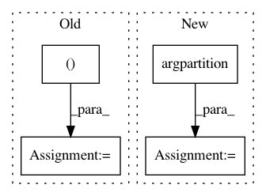

52424aae5e284440efdb4aea30266a69553d1dde,umap/umap_.py,UMAP,transform,#UMAP#Any#,1665
Before Change
indices = np.argsort(dmat)
dists = np.sort(dmat) // TODO: more efficient approach
indices = indices[:, : self.n_neighbors]
dists = dists[:, : self.n_neighbors]
else:
init = initialise_search(
self._rp_forest,
self._raw_data,
After Change
dmat = pairwise_distances(
X, self._raw_data, metric=self.metric, **self._metric_kwds
)
indices = np.argpartition(dmat,
self._n_neighbors)[:, :self._n_neighbors]
dmat_shortened = submatrix(dmat, indices, self._n_neighbors)
indices_sorted = np.argsort(dmat_shortened)
indices = submatrix(indices, indices_sorted, self._n_neighbors)
dists = submatrix(dmat_shortened, indices_sorted,
self._n_neighbors)
else:
init = initialise_search(
self._rp_forest,
self._raw_data,
In pattern: SUPERPATTERN
Frequency: 3
Non-data size: 4
Instances
Project Name: lmcinnes/umap
Commit Name: 52424aae5e284440efdb4aea30266a69553d1dde
Time: 2018-09-29
Author: joseph.m.courtney@gmail.com
File Name: umap/umap_.py
Class Name: UMAP
Method Name: transform
Project Name: jfkirk/tensorrec
Commit Name: fdb0b55f3978ac1353121a4f03a44497deb44b38
Time: 2018-03-26
Author: james.f.kirk@gmail.com
File Name: tensorrec/tensorrec.py
Class Name: TensorRec
Method Name: predict_similar_items
Project Name: lmcinnes/umap
Commit Name: 8a3b413e30c93228a84e3c895408c01b89fab512
Time: 2018-08-12
Author: johann.faouzi@gmail.com
File Name: umap/umap_.py
Class Name: UMAP
Method Name: transform